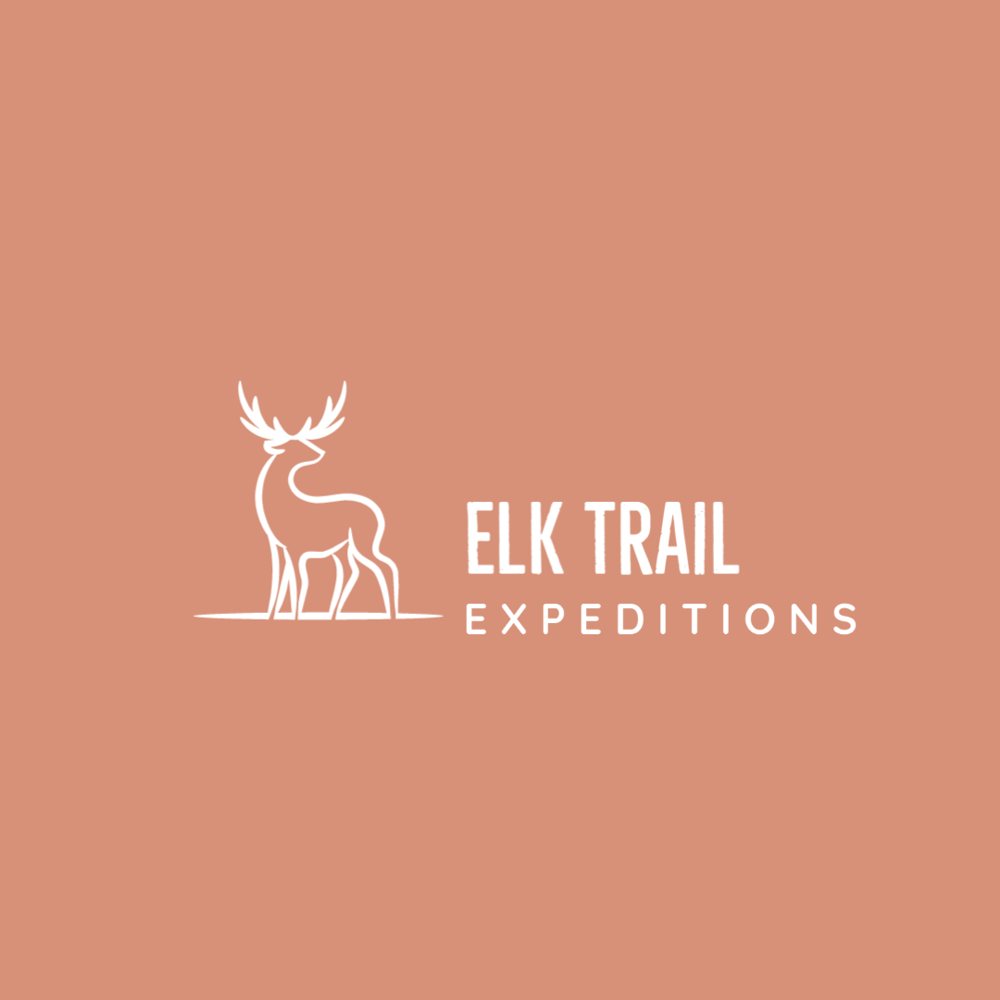
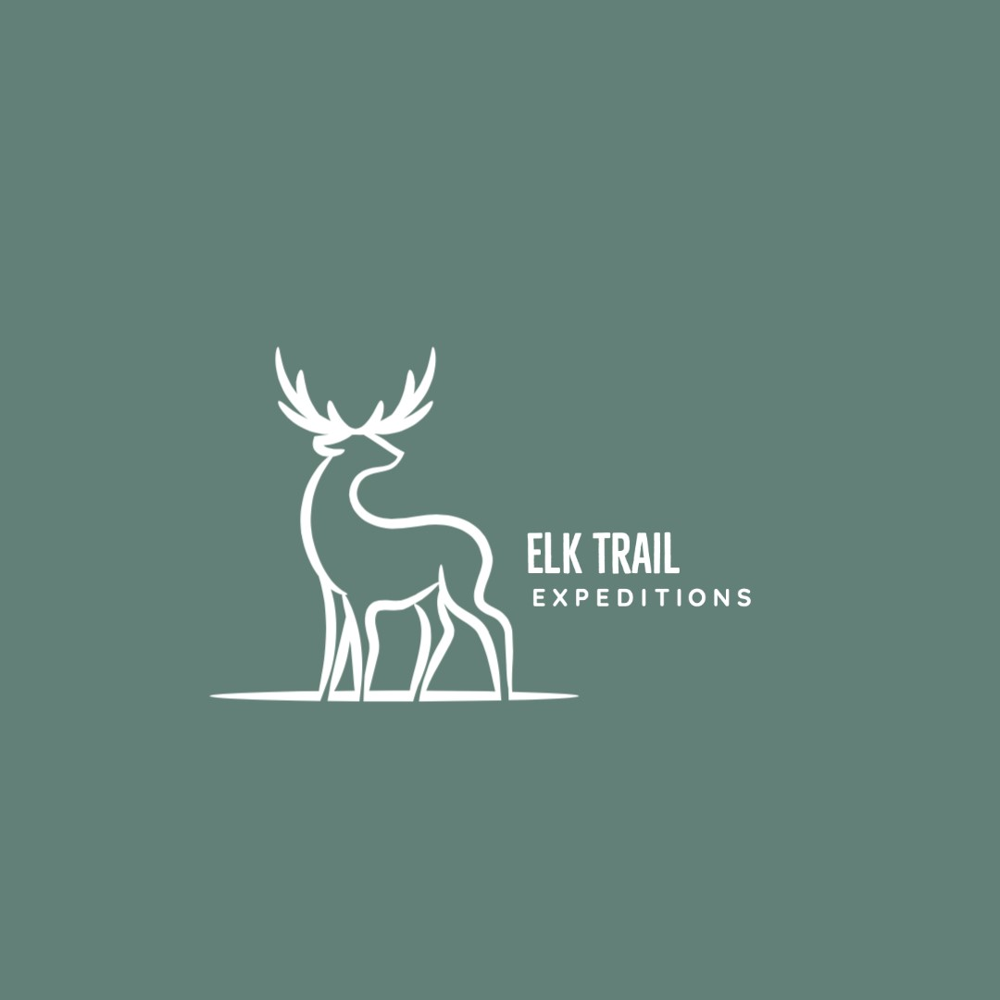

 
Email: franciscontreras98@gmail.com
Phone Number: 301-401-4018
LinkedIn: https://www.linkedin.com/in/francisco-327/
Address: 3728 Singleton Terrace, Frederick, MD 21704
A high-energy student currently finalizing an Information Science diploma in Data Science and prepared to contribute abilities to provide technical support in data management. As well as giving my support in customer service role while further developing acquired skills and gaining real-world experience. Highly organized, responsible and well-versed in working with teams. I will positively impact your operations with top-notch communication and critical thinking skills.